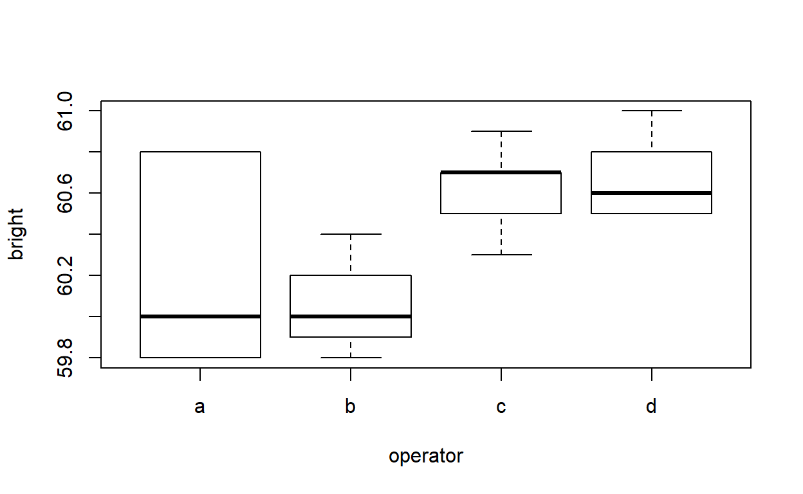
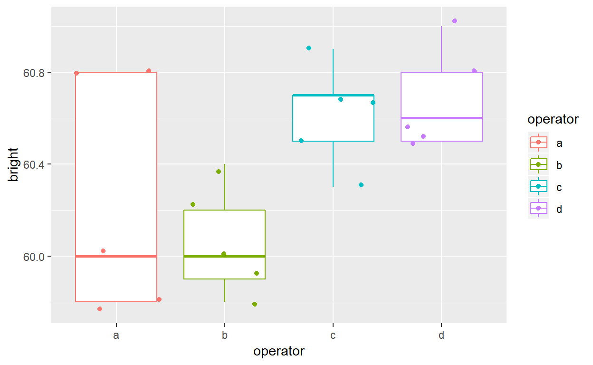

FORMULAS
Many function in R understand a special type of formula language. Some understand more complicated versions than others, but the basic idea is the same– namely we specify the relationship between variables symbolically.
Like an equals sign the symbol ~ separates the left hands side (LHS) from the right hand side (RHS) of the expression.
THE LHS is the resposne variable– note that even if the true relationship between variables is NOT causal one of the two co-variates will be treated as a response variable and the other as an explanatory variable.
The response variable (LHS) is just one variable. The RHS can be more complicated. The + symbol is used to separate explanatory variables. So, for example the following expresssion
says that the respone variable weight is explained (or predicted) by the explanatory variables age and `caloric_intake.
The corresponding equation for the predicted weight is:
\[ \widehat{weight} = \beta_0 + \beta_1\ \textrm{age} + \beta_2\ \textrm{caloric_intake} \]
The symbol : is used between two explanatory variables and introduces an interaction term into the model. For example:
The corresponding equation here is:
\[ \widehat{weight} = \beta_0 + \beta_1\ \textrm{age} + \beta_2\ \textrm{caloric_intake}+\beta_3\ (\textrm{age})(\textrm{caloric_intake}) \] The variables \(\textrm{age}\) and \(\textrm{caloric_intake}\) are known as main effects. And (\(\textrm{age})(\textrm{caloric_intake})\) is an interaction term. Unless you have a very compelling reason– it is usually not a good idea to include interaction terms without also including their corresponding main effects.
The symbol * is a short hand for all possible combinations.. so
Is a shorthand for
If three variables are included, such as y ~ A*B*C then all combinations of the three variables are included (this can quickly lead to combinatorial nightmares so use * sparingly)
By default the model will include an intercept term. IT can be removed using -1
Often a function can be used in a formula:
To protect an expression using + as an equation, rather than as a model specification, use I():
Would correspond to the linear equation:
\[
\widehat{weight} = \beta_0 + \beta_1\ \left(\textrm{age} + \textrm{caloric_intake}\right)
\] Anoter useful symbol is . which represents all columns not otherwise specified (this is most useful when there is a data=df named agument in the expression)
One extension to linear regression (and generalized linear regression) comes from mixed effect modelling. Here the idea is that there are two different types of explanatory variables:
I have not found a universally agreed upon definition for those two terms that satisfies me. There seems to be general agreement that the techniques we will discuss are useful for dealing with correlation caused by group structure and, in paricular, dealing with repeated measurements (which are break the independence assumptions of ordinary regression).
Suppose that you were trying to figure out whether or not some energy drink had an influence on the ability of an individual to shoot a basketball. Suppose you let a number of people take 100 shots from the free throw line and recorded the proportion that made it into the basket. You let the same people, if they wished, repeat the test on different occasions, but didn’t require it.
We know that some people are better than others at making baskets… we would expect such people to have higher proportions than others and we also know that since some people repeated the process the proportions are no longer all independent observations. Knowledge about who was shooting should influence our guess about the results.
One approach to deal with this **repeated measurement issue* would be to include a unique id for each participant and use that id to GROUP the attempts. If the individuals were of importance to us, then we could use a fixed effect model– and thus estimate a fixed parameter for each individuall– we could control for the persons skill level by having a separate intercept for each individual.
However, for our purposes, people themselves aren’t important in what we are trying to understand… what we really want to know is if the energy drink influences performance. We would rather think of each individual’s talent as a random sample from a large population.
For functions (like lmer() that undersstand grouped observations, terms like (1|studentID) capture this idea. Such expression occur in the RHS of the model formula.
If student ID were a factor (in the R sense of the word) than studentID would generate \(n-1\) indicator variables and there WOULD be a separate intercept for each individual. The end result would be somehwat the same (a model where every student has a different intercept), however, in the fixed effect case, this intercept would be taken as a FIXED value– A value to be estimated in its own right. As a random effect it would,instead, be considered a random variable with its own distribution– and as such inferences about the mean and the variance of that random variable can be made. In the words of Julian Faraway in his book Extending the Linear Model with R:
A random effects approach to modeling is more ambitious in the sense that it attempts to say something about the wider population beyond the particular sample.Let’s look at a quick example that is also from the book. The dataset is included in Faraway’s package faraway. It’s called pulp and it’s about how bright the paper produced by a particular plant was, depending upon who was acting as the shift operator:
## Warning: package 'faraway' was built under R version 3.6.1## Loading required package: Matrix
It certainly looks as if there was a difference. Here’s the model we would get using a traditinoal linear model
##
## Call:
## lm(formula = bright ~ operator, data = pulp)
##
## Residuals:
## Min 1Q Median 3Q Max
## -0.440 -0.195 -0.070 0.175 0.560
##
## Coefficients:
## Estimate Std. Error t value Pr(>|t|)
## (Intercept) 60.2400 0.1458 413.243 <2e-16 ***
## operatorb -0.1800 0.2062 -0.873 0.3955
## operatorc 0.3800 0.2062 1.843 0.0839 .
## operatord 0.4400 0.2062 2.134 0.0486 *
## ---
## Signif. codes: 0 '***' 0.001 '**' 0.01 '*' 0.05 '.' 0.1 ' ' 1
##
## Residual standard error: 0.326 on 16 degrees of freedom
## Multiple R-squared: 0.4408, Adjusted R-squared: 0.3359
## F-statistic: 4.204 on 3 and 16 DF, p-value: 0.02261As a refresher… notice that the F-statistic is the same as performing an ANOVA… so this model does show, under a traditional anova, that there is a statistically significant difference.
The baseline was operator a, and the coefficients for the various operators tell how much the value should be changed for the other operators:
## Registered S3 methods overwritten by 'ggplot2':
## method from
## [.quosures rlang
## c.quosures rlang
## print.quosures rlang
This tells us about the differencs between the 4 operators a-d.
Now here is how it looks using random effects:
## Linear mixed model fit by REML ['lmerMod']
## Formula: bright ~ 1 + (1 | operator)
## Data: pulp
##
## REML criterion at convergence: 18.6
##
## Scaled residuals:
## Min 1Q Median 3Q Max
## -1.4666 -0.7595 -0.1244 0.6281 1.6012
##
## Random effects:
## Groups Name Variance Std.Dev.
## operator (Intercept) 0.06808 0.2609
## Residual 0.10625 0.3260
## Number of obs: 20, groups: operator, 4
##
## Fixed effects:
## Estimate Std. Error t value
## (Intercept) 60.4000 0.1494 404.2Notice that the summary is quite different The residuals have, increased– this makes sense– we don’t have
The Statistician Gelman has a short discussion of the issue
And a much longer discussion in his 2005 paper Why Anova is still good
We are going to follow the getting started with mixed effect models tutorial by Jared Knowles
Exercise:: Reproduce the R code from the tutorial above
https://projecteuclid.org/download/pdfview_1/euclid.aos/1112967698 ## function practice
Exercise: Write a function called ’weighted.die` that takes a vector of probabilities and a number of rolls \(n\)
Exercise: Write a function called two.roll.sum() that takes a vector of six probabilities and a sum. It should return the probability that if the die is rolled twice the sum will match the argument. Hint: don’t worry about efficiency– use nested for loops. If the sum is beyond 12 or less than 2 the function should return 0
Exercise: Write a function called setDiameter that takes three arguments. The function returns the distance between the two values that are the farthest apart. For example, setDiameter(-1,2,3), should return 4 because the two values that are fartherst apart are -1 and 3 and their distance is \(\left|-1-3\right| = \left|-4\right|=4\).
CSCI Bonus: Write a function that expects one argument that is a numeric vector. Have the function return the distance between the two values that are farthest apart in the vector. (note: the vector should be able to be of any length at all)
TRY CATCH formula language
The R comands sort() and order() are related to each other but have quite different outputs. THe sort() function will, given a vector, return a vector in sorted order:
## [1] 1 4 1 2 5 3 2 3 3 1 5 5 2 2 1 5 5 1 1 5## [1] 1 1 1 1 1 1 2 2 2 2 3 3 3 4 5 5 5 5 5 5Meanwhile order() will produce the necessary indices to put the vector into order:
## [1] 1 3 10 15 18 19 4 7 13 14 6 8 9 2 5 11 12 16 17 20## [1] 1 1 1 1 1 1 2 2 2 2 3 3 3 4 5 5 5 5 5 5The function order() is particularly helpful when we hava a data.frame and we wish to reorder the rows based upon the values in a specific column:
The order() function will sort on multiple keys:
Exercise: Write a function that takes a single data.frame as an input. Assume that the first column is a special blocking variable of some sort. Call the remaining variables (columns) the data variables.
Your function should return all rows in which the data variable values are repeated. For example. In the following table:
blocking | data 1 | data 2 | \(\cdots\) | data n 0 | A | 10 | | Jesse 0 | B | 10 | | Jesse 1 | A | 10 | | Jesse
We have \(n\) data variables. The first and the third row have all those values identical (we are assuming that the omitted columns match too). The second row has many values in common with the first and third, bu since the value for data 1 is different then it is not repeated.
The function would return
blocking | data 1 | data 2 | \(\cdots\) | data n 0 | A | 10 | | Jesse 1 | A | 10 | | Jesse
The main idea is that you want to find rows where all the data-values are repeated
There is one further requirement– the data frame should be ordered by the data fields– first ordering by data 1, followed by data 2, etc.